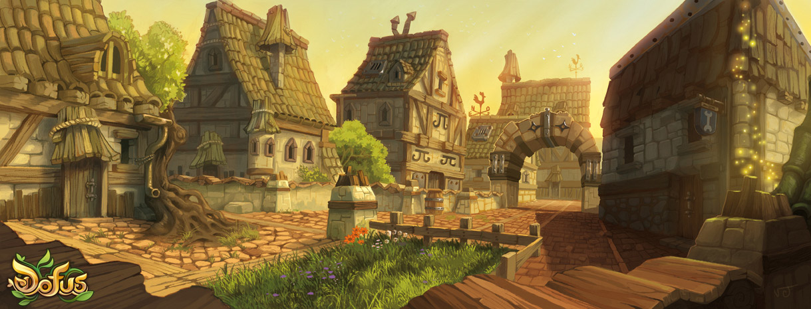

QUE ES BONTA?
Bonta es una ciudad ficticia perteneciente al videojuego en linea Dofus.
QUE ES DOFUS?
Dofus es un videojuego de rol multijugador masivo en linea (MMORPG), publicado el 24 de Agosto de 2004 por la empresa desarrolladora Ankama Games. En este videojuego, desarrollado en el continente ficticio de Amakna, miles de jugadores de todo el mundo compiten por encontrar antiguas reliquias conocidas como Dofus. Para lograr esto deben batallar monstruos, completar misiones, ganar reputacion entre las distintas ciudades, e incluso luchar contra otros jugadores.
QUIEN ES ANKAMA?
Ankama Games es una empresa de entretenimiento Francesa, enfocada en el desarrollo de videojuegos online (Dofus, Krosmaga, Wakfu). La compañia tambien es activa en proyectos de animacion como la serie animada de Wakfu, basada en el videojuego del mismo nombre